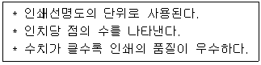

PC정비사-2급 (2014-04-27 기출문제)
1과목: PC유지보수
1. Windows XP에서 네트워크 설정을 확인하기 위한 설명 중 잘못된 것은?
- ‘ipconfig‘ 명령은 Windows 98 에서 사용할 수 있는 ‘winipcfg’ 명령과 유사한 기능을 하는 명령어이다.
- Windows XP에는 ‘winipcfg’ 명령이 실행되지 않으나, [네트워크 연결]에서 해당하는 연결의 [속성]을 확인하면 IP 주소를 보거나 갱신할 수 있다.
- ‘ipconfig’를 매개 변수 없이 사용할 경우 기본 게이트웨이 주소는 확인할 수 없다.
- ‘ipconfig -all’을 실행하면 모든 어댑터의 IP 주소 및 MAC 주소를 알 수 있다.
(정답률: 75%)

2. Windows XP 제어판 도구 중 시스템 신호음을 시각적으로 표시할 수 있도록 환경을 설정할 수 있는 구성 요소는?
- 디스플레이
- 시스템
- 프로그램 추가/제거
- 내게 필요한 옵션
(정답률: 74%)
3. Windows XP의 원격지원 서비스에 대한 설명 중 잘못된 것은?
- Windows Messenger 또는 전자 메일로도 원격지원 요청이 가능하다.
- 상대방의 IP 주소로도 원격 지원 요청을 할 수 있다.
- [시작]-[모든 프로그램]-[원격지원]을 선택하여 사용한다.
- 원격지원 서비스는 컴퓨터에 문제가 있을 경우 문제가 발생한 컴퓨터가 있는 장소에서 도와줄 사람이 도움 받을 사람의 컴퓨터를 직접 조작하는 것이 아닌, 인터넷을 이용하여 도움 받을 사람의 컴퓨터에 접속하여 제어를 하는 것을 말한다.
(정답률: 80%)
4. 다음의 프로그램 중에서 성격이 다른 하나는?
- Auslogics Disk Defrag
- Microsoft Security Essentials
- V3
- AVG Anti-Virus
(정답률: 80%)
5. 운영체제가 처리해야 할 긴급 상황 또는 돌발 상황을 통지하는 방법은?
- 시그널
- 인터럽트
- 세마포어
- 가상 메모리
(정답률: 88%)
6. 레지스트리에 대한 설명 중 틀린 것은?
- Windows를 설치하고 최적의 환경을 구성한 후 레지스트리를 백업한다.
- Windows를 재설치하거나 시스템 파일을 편집하는 등 Windows의 안정성을 보장할 수 없는 작업을 할 때는 레지스트리를 백업한 후 작업을 시작한다.
- Windows XP/2000은 레지스트리의 안정성을 위해 레지스트리 자동 복구 기능을 제공하지 않는다.
- Windows 시작시 다음 파일이 없거나 손상되어 Windows를 시작할 수 없습니다. “C:\WINDOWS\SYSTEM32\CONFIG\SYSTEM”라는 오류 메시지는 레지스트리 시스템 파일이 손상되었다는 의미로, 레지스트리를 복구하면 해결된다.
(정답률: 81%)
7. Windows XP 탐색기에서는 표시되지 않지만, 공유 창을 통해서만 확인이 되는 특수 공유 폴더에 대한 설명으로 잘못된 것은?
- drive letter$ - 관리자가 드라이브의 루트 디렉토리에 연결할수 있게 한다.
- ADMIN$ - 자원의 경로는 항상 "C:\"를 가리킨다.
- IPC$ - 컴퓨터를 원격지에서 접근할 때 컴퓨터에서 사용하는 공유자원을 확인한다.
- PRINT$ - 프린터 공유를 위해 사용된다.
(정답률: 74%)
8. Windows XP의 안전모드 옵션으로 잘못된 것은?
- 안전 모드(네트워킹 사용)
- 안전 모드(명령 프롬프트 사용)
- 디버그 모드
- SVGA 모드 사용
(정답률: 85%)
9. Windows XP 시스템이 사용하는 가상 메모리를 위한 파일은?
- win386.swp
- drvspace.bin
- dblbuff.sys
- pagefile.sys
(정답률: 69%)
10. BOOT.INI 파일을 수정할수있는 방법이 아닌것은?
- 시작-제어판-시스템-고급-시작 및 복구의 설정-편집
- 시작-실행-MSINFO-소프트웨어환경-시작프로그램
- 시작-실행-MSCONFIG-BOOT.INI
- 시작-실행-CMD 에서 c:\로 이동 EDIT BOOT.INI
(정답률: 60%)
11. 시스템 복원에 대한 설명으로 잘못된 것은?
- Windows XP는 시스템 복원 기능을 통해 사용자가 원하는 시점의 Windows 환경으로 되돌릴 수 있다.
- Windows XP의 시스템 복원 기능은 [시작] - [모든 프로그램] - [보조 프로그램] - [시스템 도구] - [시스템 복원]에서 실행할 수 있다.
- 시스템 복원 시 복원하려는 시점 이후에 설치된 프로그램이나 설정 정보는 사라지지 않는다.
- 시스템 복원 기능을 사용하려면 약간의 하드디스크 공간이 필요하다.
(정답률: 74%)
12. MMC(Microsoft Management Console)에 관한 설명 중 잘못된 것은?
- Console Tree로 구성되는데, Console Tree는 여러 Snap-Ins 프로그램들이 계층적 구조로 구성 되어 있는 것이다.
- 하나 이상의 Snap-Ins 프로그램들을 엮어서 단순하고 중앙 집중된 MMC Console을 만들 수 있다.
- 각 MMC에는 'Action'과 'View' 메뉴가 있는데, Console Tree에서의 선택에 따라 이 메뉴 내용은 달라진다.
- Microsoft 이외에 타사에서 나온 관리프로그램들은 이 MMC내의 Snap-Ins 프로그램으로 추가될 수가 없다.
(정답률: 73%)
13. Windows XP의 미디어 플레이어에서 재생이 불가능한 파일의 확장자는?
- ASF
- WAV
- MPG
- XLS
(정답률: 73%)
14. Windows에서 지원하는 디스크 관리 프로그램이다. 이들 가운데 디스크 에러를 검사하거나 디스크를 최적화하기 위한 프로그램이 아닌 것은?
- 디스크 정리
- 디스크 검사
- 디스크 조각모음
- 디스크 공간늘림
(정답률: 76%)
15. Windows XP를 관리 할 때 사용되는 프로그램 중 WWW, Gopher, FTP등의 인터넷 서비스를 운영하기 위해 사용되는 것은?
- 작업 관리자
- 시스템 관리자
- 인터넷 서비스 관리자
- 사용자 관리자
(정답률: 84%)
2과목: PC운영체제
16. 노트북에 사용하는 규격인 PCMCIA에서 하드디스크를 사용하기 위한 규격은?
- TYPE 1
- TYPE 2
- TYPE 3
- 관계 없음
(정답률: 76%)
17. 외장형 저장장치의 인터페이스로 잘못된 것은?
- IEEE 1394
- USB
- E-IDE
- E-SATA
(정답률: 62%)
18. 스캐너로 입력받은 문서의 내용을 텍스트로 변경하는 기기를 나타내는 용어는?
- OCR
- 디더링
- 캡처
- CAD
(정답률: 78%)
19. 다음은 어떤 단위에 대한 설명인가?

- CPS
- DPI
- PPM
- LPM
(정답률: 86%)
20. 파워서플라이의 출력 DC 전압의 종류로 잘못된 것은?
- +3.3V
- +5V
- +10V
- +12V
(정답률: 74%)
21. 현재 KS X 5002 규정에 국가 표준으로 공인되어 있는 한글 자판은?
- 2벌식 자판
- 3벌식 자판
- 3벌식 최종자판
- 3벌식 390 자판
(정답률: 81%)
22. PC의 버스 인터페이스 방식이 아닌 것은?
- ISA
- PCI-E
- AGP
- FPGA
(정답률: 66%)
23. 00-00-1C-D1-85-2C 의 의미는?
- MAC Address
- Network Address
- IP Address
- Node Address
(정답률: 84%)
24. 물리적인 하나의 하드디스크를 용량에 따라 여러 개의 논리적 하드디스크 드라이브로 분할하는 것을 뜻하는 용어는?
- 스핀들 (Spindle)
- 로우레벨 포맷(Low-level Format)
- 파티션(Partition)
- 하드디스크 인터리브 (Hard Disk Interleave)
(정답률: 89%)
25. PC의 메인보드에 대한 설명으로 잘못된 것은?
- 현재 ATX 보드가 가장 널리 사용되고 있다
- 전원부의 페이즈 구성이 간소화 될수록 좋다.
- 내장 그래픽 칩셋이 내장된 보드는 외장 그래픽카드가 없이도 기본적인 화면 출력을 제공한다.
- Mini-ITX 는 170 x 170 mm 크기의 규격이다.
(정답률: 66%)
26. 그래픽 카드 성능에 가장 직접적인 영향을 미치는 것은?
- 픽셀 파이프 라인
- GPU 코어와 클럭
- GPU 메모리 버스
- GPU 메모리 용량
(정답률: 87%)
27. 일반 케이스에 있는 HDD LED가 정상적으로 연결되어 있을 경우, 확인할 수 있는 것은?
- HDD의 바이러스 체크 이상 여부 확인
- CMOS의 설정 오류 확인
- HDD의 연결 상태 확인
- USB의 오류 여부 확인
(정답률: 76%)
28. CPU, 혹은 그래픽 칩에서 발생하는 열을 제대로 냉각시키지 못하면 치명적인 고장을 일으키게 된다. 이 때문에 요즘 메인보드는 LM모듈을 탑재해 쿨링팬의 회전상태나 회전속도를 감시하는 기능이 있다. 팬의 회전속도를 감지할 수 있는 쿨링팬의 배선 수는?
- 1
- 2
- 3
- 4
(정답률: 71%)
29. 전자 악기간의 디지털 신호를 주고받기 위하여 각종 신호를 약속한 일종의 약속 언어인 MIDI의 원어로 올바른 것은?
- Multi Interface for Digital Instrument
- Multi Input Data Instrument
- Musical Instrument Digital Interface
- Musical Interface for Digital Input
(정답률: 73%)
30. CPU의 주요 기능에 대한 설명 중 잘못된 것은?
- 버스 인터페이스 유닛 : CPU와 주기억장치를 비롯한 외부 장치와 연결되는 통로
- 컨트롤 유닛 : CPU 내부에 전달되는 명령어를 해석하여 ALU가 정확히 연산을 수행하도록 컨트롤
- 데이터 캐시 : 십진법 단위로 쪼갤 수 없는 소수점 이하의 숫자를 처리
- 디코딩 유닛 : ALU가 이해할 수 있는 명령으로 바꾸어 줌
(정답률: 78%)
3과목: PC주변기기
31. 파티션에 대한 설명 중 잘못된 것은?
- 리눅스 파티션은 최대 4개까지 나눌 수 있다.
- 윈도우 파티션의 크기는 MB 단위로 입력할 수 있다.
- 파티션의 크기는 전체 하드디스크의 '%'로 지정할 수 있다.
- 파티션을 나눈 후, 포맷을 해야 사용할 수 있다.
(정답률: 66%)
32. CPU가 CAS/RAS 에 신호를 보내어 메모리의 정보가 도착할 때까지의 시간을 나타내는 용어는?
- Lead
- Delay
- Latency
- Integrity
(정답률: 78%)
33. PC에서 발생하는 전자파나 누전을 방지하기 위한 방법으로 잘못된 것은?
- 접지 콘센트를 이용하여 접지를 한다.
- 전자파 차단 효과가 있는 보안경이나 PC 케이스를 사용한다.
- 모니터의 화면재생빈도를 조절한다.
- 접지를 위한 도선은 굵게 하는 것이 좋다.
(정답률: 72%)
34. 오버클럭킹(Over Clocking)에 대한 설명 중 잘못된 것은?
- 인텔 i5-2500K CPU는 배수락이 해제된 프로세서로 오버클러킹에 유리하다.
- 배수 변경에 의한 오버클럭은 메모리 부분 클럭에 영향을 주지 않는다.
- CMOS의 CPU Core Voltage 에서 전압을 높여주면 오버클럭 헤드룸이 향상되나 지나치게 높은 경우 부품에 손상을 가져올 수 있다.
- 보드에서 지원하지 않는 베이스클럭으로도 오버 할 수 있다.
(정답률: 76%)
35. Ghost에 대한 설명으로 잘못된 것은?
- 압축 수준 선택을 통해 백업을 할 수 있다.
- 원본데이터 크기보다 복제할 디스크의 크기가 작아도 된다.
- 하드디스크 전체를 이미지로 백업해 주는 유틸리티이다.
- 노턴 고스트의 경우, 병렬포트를 이용하여 두대의 컴퓨터를 연결하여 작업할 수 있다.
(정답률: 76%)
36. PC 조립 시 연결하지 않으면 시스템이 멈추는 증상 등의 치명적인 문제를 발생시킬 수 있는 것은?
- HDD LED 커넥터
- Power LED 커넥터
- CPU 쿨러 커넥터
- CD-ROM 사운드 케이블
(정답률: 81%)
37. FSB 800인 시스템에서, PC2-6400과 PC2-5300 SDRAM을 혼용했을 경우 결과는?
- PC2-6400 으로 동작.
- PC2-5300 으로 동작.
- FSB 133 으로 동작.
- 함께 사용할 수 없다.
(정답률: 80%)
38. BIOS 설정의 내용 중에서 부트 섹터와 파티션 테이블에 기록이 되지 않도록 설정 할 때 사용되는 메뉴는?
- CPU Cache
- Anti Virus Protection
- ROM BIOS Shadow
- Power Management
(정답률: 58%)
39. 시스템을 관리하는 요령으로 잘못된 것은?
- 먼지와 습기의 염려가 적고 통풍이 잘되는 곳에 설치한다.
- 번개가 치는 날에는 초고속인터넷 모뎀에 연결된 전화선을 빼두는 것이 좋다.
- 모니터 화면 부분은 깨끗한 물걸레로 잘 닦아 주어야 한다.
- 정기적으로 하드디스크의 오류를 검사해 준다.
(정답률: 87%)
40. 보조기억장치의 설명으로 잘못된 것은?
- 프로그램이나 데이터를 보관하기 위한 기억장치이다.
- 자료 접근 방법에 따라 순차접근 방식과 직접접근 방식이 있다.
- 주기억 장치보다 가격이 비싸며, 다량의 자료를 영구적으로 보관할 수 없다.
- 보조기억장치의 종류로 자기테이프, HDD, CD-ROM 등이 있다.
(정답률: 80%)
41. 부팅할 때 “Bad or missing Command Interpreter”라는 메시지가 나올 경우, 예상되는 에러 및 조치는?
- 드라이브에 부팅 가능한 디스크가 없는 경우로 부팅 가능한 디스크로 재부팅한다.
- command.com 파일이 깨졌거나 없어진 경우로 파일을 복사해 준다.
- 롬 칩이 고장 난 경우로 CMOS 설정을 확인하고 재설정한다.
- 하드디스크의 부트 영역이 손상된 것으로 다시 포맷한다.
(정답률: 65%)
42. PC 조립에 대한 설명 중 잘못된 것은?
- Power Supply는 큰 냉각팬이 돌아가기 때문에 단단히 고정하지 않으면 냉각팬 돌아가는 소리가 크게 들린다.
- 메인보드의 Power S/W와 Reset S/W는 극성이 없으므로 연결커넥터는 사용자가 마음대로 연결해도 무방하다.
- 시리얼 ATA 방식의 하드디스크를 연결할 때는 점퍼 설정을 해야 한다.
- CPU나 하드디스크는 동작 중 많은 열이 발생하므로, 본체의 통풍이 원활하도록 조립한다.
(정답률: 58%)
43. Windows XP에 포함된 드라이버 롤백 기능에 대한 설명 중 잘못된 것은?
- 컴퓨터 시스템 장치의 드라이버를 업그레이드 한 후 리소스 충돌등의 문제가 발생한 경우, 업그레이드 설치 이전의 상태로 되돌리기 위해 사용할 수 있다.
- 업데이트 바로 이전의 상태로만 되돌리는 것이 가능하며, 두 번 이상 변경된 드라이버를 건너 뛰어 되돌리는 것은 불가능하다.
- 프린터 드라이버도 되돌릴 수 있다.
- 드라이버 롤백으로 드라이버를 교체할 수는 있지만 제거할 수는 없다.
(정답률: 67%)
44. Windows XP와 멀티부팅 시스템에서 Windows Vista를 제거할 때 주의할 사항으로 잘못된 것은?
- 이 절차를 수행하려면 Vista 설치 디스크가 필요하다.
- 시작하기 전에 프로그램, 파일 및 설정을 백업하는 것이 좋다.
- Vista가 부팅 파티션에 설치된 경우에도 포맷하여 제거할 수 있다.
- 운영체제의 MBR의 코드를 변경한 다음 Windows XP로 되돌릴 수 있다.
(정답률: 58%)
45. 컴퓨터 조립 후 전원을 넣었더니 LED와 쿨링팬은 정상으로 작동하는데 아무런 소리도 없고, 부팅도 되지 않는 이유는?
- CPU가 정확하게 장착되지 않았다.
- 메인보드 BIOS를 업그레이드하는 도중 정전되었다.
- 디스플레이 어댑터가 장착되지 않았다.
- 메인보드가 파손되었거나, 불량 제품이다.
(정답률: 49%)
4과목: PC네트워크
46. 통신망과 통신망을 연결하는데 있어서 단순히 전송 신호만을 증폭해서 다시 전송해주는 역할을 수행하는 것은?
- Bridge
- Router
- Repeater
- Gateway
(정답률: 73%)
47. Windows XP 환경의 PC에서 'ipconfig /all' 명령을 사용했을 때 나타나는 각 항목에 대한 설명으로 잘못된 것은?
- DHCP Enabled : 현재 할당된 IP가 외부 통신이 가능한지 나타낸다.
- IP Address : 현재 할당된 IP 주소를 나타낸다.
- Default Gateway : 기본적으로 사용되는 Gateway 주소를 나타낸다.
- Physical Address : 네트워크 어댑터의 MAC주소를 나타낸다.
(정답률: 63%)
48. Proxy Server의 기능을 가장 올바로 설명한 것은?
- 자주 접속하는 사이트의 데이터를 서버에 저장 해 둠으로서 인터넷 속도를 개선한다.
- 접속했던 사이트의 기록을 제거한다.
- 인터넷 접속을 위한 통신 프로토콜이다.
- 웹 서비스외에 뉴스 그룹이나 FTP 서버에 접속하기 위해서는 반드시 있어야 한다.
(정답률: 67%)
49. Windows XP에서 지원하는 인터넷 연결 방화벽(ICF)은 어떤 방식인가?
- 애플리케이션 방화벽
- 상태 저장 방화벽
- 서킷 방화벽
- 하이브리드 방화벽
(정답률: 55%)
50. 상용화된 소프트웨어를 변조하여 사용 또는 배포하는 행위는?
- 크랙
- 해킹
- 복제
- 도용
(정답률: 84%)